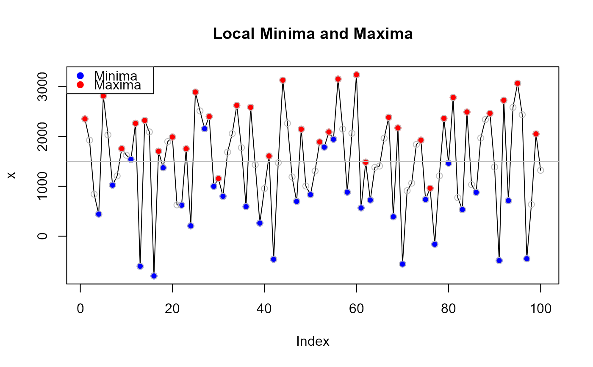

Calculates the local minimums and maximums in a numeric vector, indicating inflection points in the distribution.
local.min.max(x, dev = mean, plot = TRUE, add.points = FALSE, ...)
| x | A numeric vector |
|---|---|
| dev | Deviation statistic (mean or median) |
| plot | plot the minimum and maximum values with the distribution (TRUE/FALSE) |
| add.points | Should all points of x be added to plot (TRUE/FALSE) |
| ... | Arguments passed to plot |
A list object with:
minima - minimum local values of x
maxima - maximum local values of x
mindev - Absolute deviation of minimum from specified deviation statistic (dev argument)
maxdev - Absolute deviation of maximum from specified deviation statistic (dev argument)
Useful function for identifying inflection or enveloping points in a distribution
Jeffrey S. Evans jeffrey_evans@tnc.org
x <- rnorm(100,mean=1500,sd=800) ( lmm <- local.min.max(x, dev=mean, add.points=TRUE, main="Local Minima and Maxima") )#> $minima #> [1] 827.78939 948.20703 580.73195 708.81527 662.03105 1449.92962 #> [7] 998.02097 1832.37958 301.64906 434.00816 1264.31486 1730.09549 #> [13] 189.90257 75.14341 371.23808 1248.29052 949.23621 934.18883 #> [19] 1072.99784 1127.10159 865.76217 355.88922 306.05532 939.68516 #> [25] 774.30590 -315.80553 605.74402 1292.05638 1473.12980 1853.39736 #> [31] 1036.77561 573.38028 752.64772 1919.84403 973.53144 794.38973 #> #> $maxima #> [1] 2263.5765 3308.4871 2239.9666 1130.1783 2827.1845 2481.5083 1887.8376 #> [8] 3038.9281 1968.3203 2059.4191 1806.0278 1788.4105 2092.4467 1426.3621 #> [15] 868.5744 2089.7321 2806.6268 2544.6896 2437.4205 1923.1894 1730.1525 #> [22] 2288.0102 3982.9976 1368.2119 1358.2133 2291.7296 768.6202 2176.9375 #> [29] 2520.3184 2433.8291 1994.2868 1964.8732 1564.3416 3144.7679 2067.5198 #> [36] 2235.9257 2586.4663 #> #> $devmin #> [1] 697.54684 577.12920 944.60428 816.52096 863.30518 75.40661 #> [7] 527.31526 307.04335 1223.68717 1091.32807 261.02137 204.75926 #> [13] 1335.43366 1450.19282 1154.09815 277.04571 576.10002 591.14741 #> [19] 452.33839 398.23464 659.57407 1169.44701 1219.28091 585.65107 #> [25] 751.03033 1841.14176 919.59221 233.27985 52.20643 328.06113 #> [31] 488.56062 951.95595 772.68851 394.50780 551.80479 730.94650 #> #> $devmax #> [1] 738.24028 1783.15084 714.63036 395.15798 1301.84828 956.17204 #> [7] 362.50140 1513.59190 442.98406 534.08283 280.69155 263.07424 #> [13] 567.11049 98.97418 656.76180 564.39582 1281.29062 1019.35336 #> [19] 912.08431 397.85313 204.81623 762.67400 2457.66141 157.12438 #> [25] 167.12291 766.39341 756.71608 651.60126 994.98216 908.49284 #> [31] 468.95056 439.53694 39.00539 1619.43164 542.18357 710.58947 #> [37] 1061.13004 #># return only local minimum values local.min.max(x)$minima#> [1] 827.78939 948.20703 580.73195 708.81527 662.03105 1449.92962 #> [7] 998.02097 1832.37958 301.64906 434.00816 1264.31486 1730.09549 #> [13] 189.90257 75.14341 371.23808 1248.29052 949.23621 934.18883 #> [19] 1072.99784 1127.10159 865.76217 355.88922 306.05532 939.68516 #> [25] 774.30590 -315.80553 605.74402 1292.05638 1473.12980 1853.39736 #> [31] 1036.77561 573.38028 752.64772 1919.84403 973.53144 794.38973